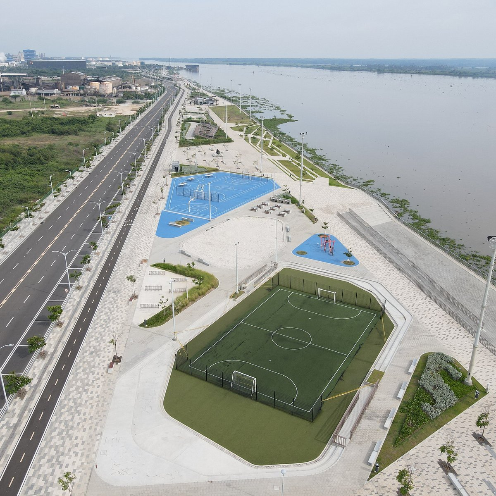

Lugar Tipico

Malecon del Rio
El Malecón del Río es uno de los espacios urbanos más modernos y representativos de Barranquilla. Está ubicado a orillas del río Magdalena y ofrece un ambiente ideal para caminar, hacer ejercicio o simplemente relajarse mientras se disfruta de la brisa y los atardeceres. Cuenta con zonas verdes, restaurantes, miradores y espacios culturales que lo convierten en un punto de encuentro tanto para locales como turistas. Es un símbolo del desarrollo reciente de la ciudad y de su conexión con el río.